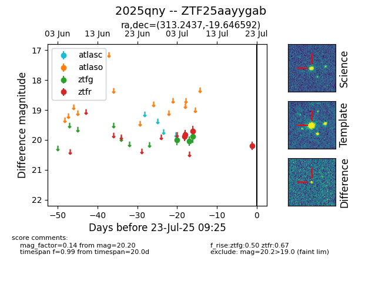

Target ZTF25aayygab at 2025-07-23 12:37, see:
FINK: fink-portal.org/ZTF25aayygab
Lasair: lasair-ztf.lsst.ac.uk/objects/ZTF25aayygab
ALeRCE: alerce.online/object/ZTF25aayygab
TNS: wis-tns.org/object/2025qny
YSE: ziggy.ucolick.org/yse/transient_detail/2025qny
alt names
ZTF25aayygab (ztf,fink)
2025qny (tns,yse)
coordinates:
equatorial (ra, dec) = (313.2437,-19.64659)
galactic (l, b) = (27.1670,-35.25782)
photometry
last ztfg=19.88, ztfr=20.20
3 ztfg, 4 ztfr detections
